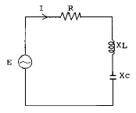
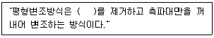
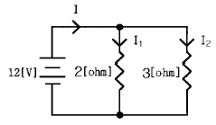
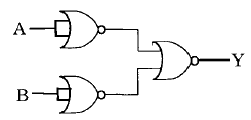
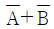
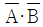
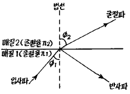

통신선로기능사 (2002-04-07 기출문제)
1과목: 전기전자개론
1. 5[Ω]과 15[Ω]의 저항을 직렬로 접속하고 40[V]의 전압을 가할때 5[Ω] 양단의 전압은 얼마인가?
- 10[V]
- 20[V]
- 30[V]
- 40[V]
(정답률: 45%)

2. 저항 5[Ω], 유도리액턴스 2[Ω], 용량리액턴스 14[Ω]인 직렬회로의 임피던스는 얼마인가?
- 5[Ω]
- 8[Ω]
- 12[Ω]
- 13[Ω]
(정답률: 17%)
3. R = 4[Ω], XL = 8[Ω], XC = 4[Ω]인 RLC 직렬회로에서 전압과 전류의 위상관계는?

- 전압이 전류보다 위상이 π/4(rad)앞선다.
- 전류가 전압보다 위상이 π/4(rad)앞선다.
- 전압이 전류보다 위상이 π/3(rad)앞선다.
- 전류가 전압보다 위상이 π/3(rad)앞선다.
(정답률: 67%)
4. 자석에 의한 자기 현상의 설명 중 알맞는 것은?
- 서로 다른 극 사이에는 흡인력이 작용한다.
- 철심이 있으면 자속 발생이 어렵다.
- 자력선은 N극에서 들어와서 S극으로 나간다.
- 자력은 거리에 비례한다.
(정답률: 71%)
5. 다음 중 불순물 반도체인 억셉터(acceptor)에 관계있는 것은?
- 4 가인 Ge
- 4 가인 Si
- 3 가인 Ga
- 5 가인 As
(정답률: 65%)
6. 신호 주파수가 1[㎑]이고 최대 주파수 편이가 5(㎑)일 때 변조지수 mf는?
- 4
- 5
- 6
- 7
(정답률: 71%)
7. 대칭 3상 교류에서 각 상간의 위상차는 얼마인가?
- 90°
- 120°
- 150°
- 180°
(정답률: 60%)
8. 트랜지스터 증폭회로에서 잡음이 없을 때 잡음지수 F는?
- ∞
- 10
- 1
- 0
(정답률: 36%)
9. 발진회로의 주파수변동 원인과 대책으로 거리가 먼 것은?
- 부하의 변동 - 완충증폭기 사용
- 주위온도 변화 - 항온조 사용
- 부품 특성변화 - 가능한한 직렬회로로 사용
- 전원 전압변동 - 정전압회로 사용
(정답률: 59%)
10. 다음 ( )안에 알맞는 방식은?

- 상측파대
- 하측파대
- 반송파
- 변조파
(정답률: 67%)
11. 공기 중에서 ＋7 × 10-4[㏝]인 자속으로부터 7[cm] 떨어진 점의 자계의 세기는 얼마인가?
- 9.04 × 106[AT/m]
- 9.04 × 105[AT/m]
- 9.04 × 104[AT/m]
- 9.04 × 103[AT/m]
(정답률: 10%)
12. LC발진회로에서 C값을 4배로 하면 원래 주파수의 몇 배가 되는가?
- 2배
- 4배
- 1/2배
- 1/4배
(정답률: 55%)
13. 주파수 대역폭(BW)의 범위를 옳게 설명한 것은?
- 중역 주파수에서 증폭도보다 3[㏈] 증폭도가 낮아지는 저역, 고역 사이의 주파수범위
- 중역 주파수에서 증폭도보다 3[㏈] 증폭도가 높아지는 저역, 고역 사이의 주파수범위
- 중역 주파수에서 증폭도보다 5[㏈] 증폭도가 낮아지는 저역, 고역 사이의 주파수범위
- 중역 주파수에서 증폭도보다 5[㏈] 증폭도가 높아지는 저역, 고역 사이의 주파수범위
(정답률: 17%)
14. 두 개의 저항 2[Ω], 3[Ω]을 병렬로 접속하고 12[V]의 전압을 인가했을 때 회로의 전류 I, I1, I2의 크기 중 옳게 나타낸 것은?

- I1 ＜ I2
- I1 ＞ I2
- I1 ＞ I
- I ＜ I2
(정답률: 54%)
15. 저항(R)과 리액턴스(L)가 직렬로 연결된 회로에서의 시정수 T[sec]는?
- 1/RL
- R/L
- L/R
- RL
(정답률: 22%)
2과목: 전자계산기일반
16. 자기테이프에 대한 설명중 잘못된 것은?
- 데이터의 기록은 BOT와 EOT 사이에 이루어진다.
- 데이터의 입력 또는 출력은 데이터 한개 단위로 처리된다.
- 데이터의 입력 또는 출력은 레코드 단위 또는 블럭단위로 처리 된다.
- IRG와 IBG는 데이터의 구분을 명확히 하기 위한 목적이 있다.
(정답률: 알수없음)
17. 전자계산기의 장치 중 주기억장치에 기억된 프로그램을 차례로 읽어 그 내용을 해독하고, 해독된 의미에 따라 필요 장치에 신호를 보내어 작동시키며, 그 결과를 검사하는 역할을 하는 장치는?
- 제어 장치
- 주기억 장치
- 연산 장치
- 보조 기억 장치
(정답률: 44%)
18. 전자계산기를 유용하게 활용하기 위한 정보나 기술 및 프로그램을 총칭하여 무엇이라고 하는가?
- 컴파일러
- 하드웨어
- 어셈블리어
- 소프트웨어
(정답률: 54%)
19. 다음중 제 4세대 컴퓨터의 주요소자에 해당되는 것은?
- 고밀도 집적회로(L.S.I)
- 트랜지스터
- 집적회로(I.C)
- 마이크로 프로세스(microprocessor)
(정답률: 67%)
20. 고급언어(HIGH LEVEL LANGUAGE)에 속하지 않는 것은?
- 어셈블리어
- PL/I
- 코볼
- 알골
(정답률: 34%)
21. 2진법을 16진법으로 변환하는 과정에 관한 설명으로 가장 타당한 것은?
- 2진수를 4진수로 바꾸어 4배 한다.
- 2진법을 8진법으로 바꾸고, 8진법을 16진법으로 환산한다.
- 2진수를 하위 4비트씩 16진수로 바꾼다.
- 2진수를 8진수로 바꾸어 2배 한다.
(정답률: 42%)
22. 다른 기억장치에 비하여 고속,소형이고 가격이 저렴하여 많이 사용되는 기억장치는?
- 자기 드럼 기억장치
- 자기 코어 기억장치
- 집적회로 기억장치
- 자성박막 기억장치
(정답률: 45%)
23. 다음 논리 회로에 대한 논리식으로 맞는 것은?


- A+B
- A·B

(정답률: 20%)
24. 조합 논리 회로에 대한 설명으로 잘못된 것은?
- 조합 논리 회로는 기억 능력이 없다.
- 출력은 입력 신호의 값으로 결정된다.
- 동기식 또는 비동기식 동작을 한다.
- 반가산기, 전가산기, 디코더 등이 있다.
(정답률: 30%)
25. 다음 중 컴퓨터 한 대에 2개 이상의 CPU를 설치하여 병렬처리하는 방식은?
- 멀티프로그래밍
- 멀티 버퍼링
- 멀티 타스킹
- 멀티프로세싱
(정답률: 62%)
26. 특성임피던스 660[Ω]인 시외 PEF-P 케이블과 특성임피던스 400[Ω]인 반송 케이블을 접속했을 때 반사계수는?
- 0.245
- 0.606
- 1.650
- 2.538
(정답률: 32%)
27. CCP 케이블이나 FS 케이블의 심선색깔 구조중 1번심(TIP)은 5가지 색으로 구분된다. 그 순서가 맞는 것은?
- 백,적,흑,황,자
- 백,흑,적,황,자
- 백,적,흑,자,황
- 흑,백,적,황,자
(정답률: 46%)
28. 시내 전화 선로가 교환국내에서 최초로 접속되는 장치는?
- 중간 배선반(I.D.F)
- 본 배선반(M.D.F)
- 단자함
- 배전함
(정답률: 50%)
29. 시외 전화케이블에 있어서 PVC 절연은 종이절연에 비해 절연내력은 어떠한가?
- 동일하다.
- 높았다 낮았다 한다.
- PVC 절연이 낮다.
- PVC 절연이 높다.
(정답률: 55%)
30. 열수축관에 관한 설명으로 틀리는 것은?
- 방사선을 처리하여 가공한 접속관으로 가열하면 급속히 팽창된다.
- 열을 가하면 수축되어 내경이 좁은 접속관으로 된다.
- 접속된 부분은 외압이나 물속에서도 접속효과가 양호하다.
- 공기주입형 열수축관은 JP형과 JC형 등이 있다.
(정답률: 67%)
3과목: 통신선로일반
31. 지하 케이블 포설속도는 1분간 약 몇[m]로 하는 것이 가장 적합한가?
- 약 100[m]
- 약 80[m]
- 약 40[m]
- 약 10[m]
(정답률: 30%)
32. L3 시험기로 측정할수 없는 것은?
- 루우프 저항의 측정
- 통화감쇠량 측정
- 혼선고장 위치측정
- 단선고장 위치측정
(정답률: 39%)
33. 옥내선로 공사시 고층건물의 옥내배선에 주로 사용하는 배관은?
- 토관
- 콘크리트관
- 경질 PVC관
- 석면시멘트관
(정답률: 88%)
34. 100P용 FS케이블의 심선구조에서 세번째 그룹의 심선수는?
- 12P
- 13P
- 25P
- 50P
(정답률: 58%)
35. 통신회선에 있어서 전력유도에 의한 피해가 아닌 것은?
- 전화통화자 등에 대한 전기적 충격
- 통신기기에 대한 절연파손 및 소손
- 강전선과 전화회선과의 루우트 변경
- 데이터전송에 있어서 오부호의 발생
(정답률: 40%)
36. 전자유도를 받는 PVC 차폐 케이블에서 그 유도전압이 2.3[V]이다. 이 케이블의 스트랜드선 양단을 접지한 바 2.25[V]가 되었다고 하면 차폐계수 K의 값은?
- 0.103
- 0.978
- 1.083
- 1.783
(정답률: 55%)
37. 다음 중 고주파(UHF) 신호전송에 가장 적합한 것은?
- 유니트형 케이블
- 해저 광케이블
- 비차폐형 케이블
- 동축형 케이블
(정답률: 20%)
38. 구내 통신선과 전력선이 교차할 때 어떻게 하는 것이 가장 좋은가?
- 교차점에서 통신선에 플라스틱 보호관을 씌운다.
- 교차점에서 전력선에 플라스틱 보호관을 씌운다.
- 절대로 교차를 시켜서는 안된다.
- 통신선과 전력선을 그대로 교차시킨다.
(정답률: 알수없음)
39. 맨홀내에 들어가 작업을 하는 작업요원으로서 준수하여야 하는 사항으로 적합하지 않은 것은?
- 작업안내 및 위험표지판을 설치한다.
- 반드시 가스탐지기로 유독성가스 잔류유무를 확인하기 전에는 들어가지 않는다.
- 가스가 검출되지 않은 경우라도 통풍기등을 사용하여 수시로 신선한 공기를 환산시킨다.
- 야간작업시는 황색 표시등을 부가하여 설치한다.
(정답률: 62%)
40. 전주상에 시내 단자함을 부착하는 경우 강연선 아래 몇 [㎝]의 위치가 적당한가?
- 30[㎝]
- 60[㎝]
- 90[㎝]
- 120[㎝]
(정답률: 39%)
41. 다음 중 지하선로의 매설방법에 해당되지 않는 것은?
- 인수공식
- 직매식
- 통신구식
- 관로식
(정답률: 47%)
42. 폼스킨(Foam Skin) 케이블과 지절연 케이블과의 절연 특성을 비교하여 폼스킨 케이블의 장점이 아닌 것은?
- 디지탈(digital) 통신의 우수성
- 내한 및 내열의 우수성
- 회선간의 누화 특성이 우수함
- 임펄스 잡음의 감소성
(정답률: 34%)
43. 광섬유 케이블의 중심지지선 또는 폴리에틸렌 외피에 있는 철선(Steel wire)의 용도는 무엇인가?
- 포설용 인장선
- 전화국간 연락선
- 케이블의 경보선
- 중계용 급전선
(정답률: 58%)
44. 빛의 굴절 법칙(Snell의 법칙)에 대한 관계식으로 맞는 것은? (단, ø1 : 빛의 입사각, ø2 : 빛의 굴절각, n1 : 매질 1의 굴절율, n2 : 매질 2의 굴절율)

- n1 cosø2 = n2 cosø1
- n1 cosø1 = n2 cosø2
- n1 sinø2 = n2 sinø1
- n1 sinø1 = n2 sinø2
(정답률: 47%)
45. 레이저(LASER)광선의 펄스폭이 분산되어서 최초의 펄스폭에 대해 몇배로 넓어지면 정보신호의 재생중계가 불가능해지는가?
- 최저 2.0배 이상
- 최저 1.8배 이상
- 최저 1.6배 이상
- 최저 1.4배 이상
(정답률: 22%)
4과목: 선로설비기준
46. 전기통신을 하기 위한 기계, 기구, 선로 기타 관련된 설비를 무엇이라고 하는가?
- 전기통신역무
- 전기통신망
- 전기통신설비
- 자가통신설비
(정답률: 71%)
47. 정보통신부장관의 특권에 관한 사항이 아닌 것은?
- 전기통신 관장권
- 기술기준 및 통신방식 결정권
- 전기통신설비의 통합운영권
- 방송사업 허가권
(정답률: 53%)
48. 전기통신 회선설비를 설치하고 전기통신 역무를 제공하는 사업을 무엇이라고 하는가?
- 공중통신사업
- 자가통신사업
- 기간통신사업
- 부가통신사업
(정답률: 54%)
49. 자가통신설비를 설치한자에 대하여 예외 없이 금지하고 있는 것은?
- 국내외간 통신
- 타인의 통신매개
- 비상시 중요 통신업무 취급
- 타인의 자가통신설비와의 상호접속
(정답률: 35%)
50. 선로설비의 기기오동작 전력유도 종전압 제한치는?
- 25[V]
- 20[V]
- 15[V]
- 10[V]
(정답률: 43%)
51. 구내통신선로설비의 회선 상호간의 누화 감쇠량은 얼마 이상이어야 하는가?
- 38[dB]이하
- 48[dB]이상
- 58[dB]이하
- 68[dB]이상
(정답률: 48%)
52. 전화케이블이 전력유도에 의한 잡음전압이 얼마 이상(제한치)되는 경우 전력유도방지조치를 하여야 하는가?
- 2.0[mV]
- 1.5[mV]
- 1.0[mV]
- 0.5[mV]
(정답률: 18%)
53. 사람과 자동차가 함께 통행하는 도로상에 전화케이블을 가설할 경우 노면상 케이블 높이는 최저 얼마 이상인가?
- 3.5m
- 4.0m
- 4.5m
- 5.0m
(정답률: 31%)
54. 정보통신을 행하기 위하여 계통적.유기적으로 연결.구성된 정보통신설비의 집합체를 무엇이라고 하는가?
- 정보통신회선
- 종합통신설비
- 국선접속설비
- 정보통신망
(정답률: 27%)
55. 정보통신공사업의 종류는?
- 무선통신공사업과 유선통신공사업으로 구분한다.
- 일반공사업과 별종공사업으로 분류한다.
- 기계공사업과 선로공사업으로 분류한다.
- 정보통신공사업 단일업종으로 되어 있다.
(정답률: 30%)
56. 일반가정집에 전화회선을 가설할 경우, 옥내전화선과 대지간의 절연저항 한계치는 얼마가 되어야 하는가?
- 최저 8[MΩ ]이상
- 최저 10[MΩ ]이상
- 최저 12[MΩ ]이상
- 최저 14[MΩ ]이상
(정답률: 알수없음)
57. 구내통신선로설비에서 주거용 건물의 경우 단위 세대당 국선용 회선수는?
- 100회선 이하
- 50회선 이하
- 5회선 이상
- 1회선 이상
(정답률: 42%)
58. 기간통신사업자의 업무취급상 특권 규정이라고 볼 수 없는 것은?
- 불온통신 단속권
- 통신비밀의 감청권
- 암어해설 요구권
- 통신설비수리원의 통행권
(정답률: 48%)
59. 기간통신사업자로부터 전기통신회선 설비를 임차하여 전기통신역무를 제공하는 사업을 무엇이라 하는가?
- 부가통신사업
- 대여통신사업
- 임차통신사업
- 특정통신사업
(정답률: 25%)
60. 다음 중 정보통신공사업자가 아닌 자도 공사할 수 있는 경미한 공사의 범위가 아닌 것은?
- 차량용 전화기 및 부대설비의 설치 또는 증설공사
- 개인용 컴퓨터 및 프린터 등의 설치 및 증설공사
- 형식승인을 받은 단말기의 설치 및 증설공사
- 종합유선방송국의 주전송장치의 설치 및 대체공사
(정답률: 56%)